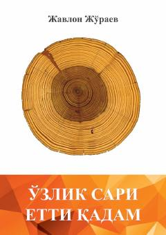

OSO'zini anglash va shaxsiy rivojlanish yo'lidagi amaliy qo'llanma.
Ushbu kitob insonning o'zini tanishi, ichki olamini o'rganishi va shaxsiy kamolotga erishishi uchun yettita qadamni taklif etadi. Muallif o'quvchi bilan samimiy muloqot qurib, qo'rquvlar, muhimlik va baxt tushunchalari ustida fikr yuritadi.